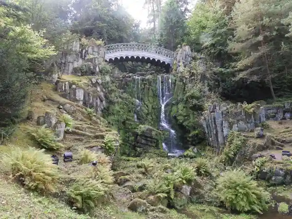
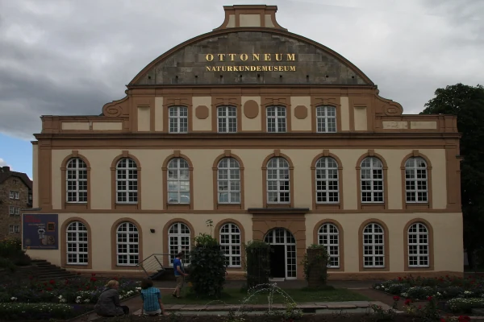

Start / Kurhessen-Therme
Aaron Schiele
geprüft am
geprüft am
Was erwartet dich in der Kurhessen-Therme?
Die Thermalwelt hat rund 1.200 Quadratmeter Wasserfläche, innen und außen, mit 31 bis 37 Grad warmem Wasser. Außen- und Innenbecken sind mit reiner Thermalsole gefüllt und haben 31 Grad, genauso die Sprudelliegen. Wer es heißer mag, steigt in die Whirlpools mit 37 Grad, die ohne Sole auskommen. Die Außenrutsche läuft noch bis 2. November 2026, danach ist Winterpause. Dienstags um 12 Uhr gibt es im Innenbecken kostenlos Aqua-Fitness.
Zum Abschalten gibt es die Traumwelt mit Klang- und Relax-Tempel, Fünf-Duft-Tempel und einem Kristall-Tempel mit Kamin und Marmorbad. Massagen und Behandlungen kosten extra. Hunger? Im Haus gibt es ein Restaurant mit Salaten, Pasta, Burgern und Kinderportionen, glutenfreie Gerichte sind möglich. Im Restaurant trägst du Bademantel oder gleichwertige Kleidung, bezahlt wird bar, mit EC- oder Kreditkarte.
Wie läuft der Saunabesuch ab?
Die Saunawelt hat acht Saunen und ein Römisches Dampfbad mit 45 Grad, darunter Kräuter-, Lehm-, Amethyst- und Heißer-Stein-Sauna. Abkühlen kannst du im Saunasee mit rund 20 Grad und über 200 Quadratmetern. In der Lehmsauna gibt es täglich um 9.25, 15.25 und 19.50 Uhr Salzaufgüsse. Die Damensauna ist nur für Frauen.
Wichtig für Tagesgäste: Der Saunabereich ist textilfrei. Montags ist Textiler Sauna Tag, dann darfst du mit oder ohne Badebekleidung saunieren; frag am Eingang kurz nach, wie es an deinem Tag gehandhabt wird. Smartphone, Tablet und Smartwatch bleiben draußen, im ganzen Saunabereich sind Geräte mit Kamera nicht erlaubt. Als Takt empfiehlt die Therme 8 bis 15 Minuten je Saunagang.
Was kostet die Kurhessen-Therme?
Die Preise gelten im Thermalbad und mit Sauna, Stand 14.10.2026. Die Zeit läuft ab dem Eintritt, auch das Umziehen zählt mit. An Feiertagen gilt der Preis für Freitag bis Sonntag.
| Aufenthalt | Thermalbad Mo bis Do | Thermalbad Fr bis So | Mit Sauna Mo bis Do | Mit Sauna Fr bis So |
|---|---|---|---|---|
| 2 Stunden | 18,00 Euro | 19,50 Euro | 23,00 Euro | 24,50 Euro |
| 3 Stunden | 20,50 Euro | 22,00 Euro | 26,50 Euro | 28,00 Euro |
| 4 Stunden | 22,50 Euro | 24,00 Euro | 28,50 Euro | 30,00 Euro |
| Tageskarte | 26,00 Euro | 28,00 Euro | 32,00 Euro | 34,00 Euro |
Wer länger bleibt, zahlt 1,50 Euro je angefangene 15 Minuten nach. Von Montag bis Donnerstag sparst du je nach Tarif 1,50 bis 2 Euro gegenüber dem Wochenende. Ein Bademantel kostet 8,00 Euro Leihgebühr plus 25,00 Euro Pfand, ein Badetuch 7,00 Euro plus 10,00 Euro Pfand; das Pfand bekommst du beim Gehen zurück. Eigene Mäntel und Tücher darfst du mitbringen, dann entfallen Leihgebühr und Pfand. Kinder bis zum 3. Geburtstag sind frei. Schwerbehinderte mit Merkzeichen „B“ zahlen den regulären Preis, die Begleitperson ist für dieselbe Zeit frei.
Wie lange hat die Kurhessen-Therme geöffnet?
Täglich von 9 bis 22 Uhr, auch montags, wenn die meisten Museen in Kassel zu haben. Becken und Saunen verlässt du 30 Minuten vor Schluss, also gegen 21.30 Uhr. Am 24.12. ist geschlossen, am 31.12. von 9 bis 16 Uhr und am 1.1. von 12 bis 22 Uhr geöffnet. Eine Reservierung ist nicht nötig, aber empfohlen: Tickets für ein Datum gibt es im Online-Shop der Therme, die Einlasszeit wählst du vor Ort flexibel. Eine Tageskarte gilt nur am Tag des Kaufs.
Ab welchem Alter dürfen Kinder in die Kurhessen-Therme?
Ein Mindestalter gibt es nicht, aber Kinder bis 15 Jahre brauchen eine Begleitperson, und bis zum 3. Geburtstag ist der Eintritt frei. Danach zahlen Kinder den regulären Preis; einen Familientarif nennt die Preisseite nicht. Babys und Kleinkinder, die noch nicht trocken sind, tragen in allen Becken eine wasserfeste Schwimmwindel. In die textilfreie Saunawelt dürfen Kinder bis zum 16. Geburtstag mit einem Erwachsenen und in Badekleidung. Kinderwagen bleiben draußen vor dem Eingang, und auch Hunde dürfen nicht mit hinein.
Wie komme ich mit der Tram zur Kurhessen-Therme?
Mit der Straßenbahnlinie 1 bis zur Haltestelle Kurhessen-Therme, von dort sind es nur wenige Meter. Die Linie fährt vom Königsplatz über den Bahnhof Kassel-Wilhelmshöhe bis zur Endstation Wilhelmshöhe (Park); die Haltestelle liegt zwischen Bahnhof und Endstation. Wer mit dem ICE kommt, steigt am Bahnhof Wilhelmshöhe in die Tram 1 Richtung Wilhelmshöhe (Park). Aktuelle Abfahrten zeigt die NVV-App.
Mit dem Auto fährst du die Wilhelmshöher Allee 361 an, zur Therme gehört ein Parkplatz. Was er kostet und wie viele Plätze er hat, nennt die Therme nicht; im Zweifel rufst du vorher unter 0561 318080 an. Wenn du erst in den Park willst, findest du alles Weitere unter Parken am Bergpark.
Wie weit ist es von der Kurhessen-Therme zum Bergpark?
Zum Schloss Wilhelmshöhe sind es 1,3 Kilometer, zu Fuß rund 17 Minuten. Die Therme liegt am Rand des Bergparks, der Park selbst ist ganzjährig kostenlos. So lässt sich der Tag planen:
- Park am Vormittag, Therme am Nachmittag. Schloss Wilhelmshöhe ist dienstags bis sonntags von 10 bis 17 Uhr offen, das Tagesticket kostet 8 Euro. Danach tut warmes Wasser gut. Mehr zum Park unter Bergpark Wilhelmshöhe.
- Wasserspiele, dann Therme. Die Saison der Wasserspiele beginnt jedes Jahr am 1. Mai und endet am 3. Oktober. Gezeigt werden sie mittwochs, sonntags und an Feiertagen, Start ist 14.30 Uhr, Ende gegen 16 Uhr. Die Saison 2026 ist vorbei, die Termine 2027 stehen noch nicht fest. Danach bleiben bis 22 Uhr Zeit für die Therme. Alles dazu unter Wasserspiele Kassel.
- Regentag. Draußen grau, drinnen 31 Grad warm: Ideen für schlechtes Wetter stehen unter Kassel bei Regen.
- Wochenende. Samstag Innenstadt, Sonntag Bergpark und abends in die Therme: Den Plan findest du unter Kassel am Wochenende.
Häufige Fragen
Wie viel kostet die Kurhessen-Therme?
Zwei Stunden Thermalbad kosten 18,00 Euro von Montag bis Donnerstag und 19,50 Euro von Freitag bis Sonntag, die Tageskarte 26,00 beziehungsweise 28,00 Euro (Stand 14.10.2026). Mit Sauna sind es ab 23,00 Euro für zwei Stunden und 32,00 Euro für den Tag.
Ist die Sauna im Eintritt der Kurhessen-Therme enthalten?
Nein, die Sauna ist ein eigener Tarif und kostet 5 bis 6 Euro mehr als das Thermalbad allein (Stand 14.10.2026). Dafür gilt er für die ganze Saunawelt mit acht Saunen.
Muss ich in der Kurhessen-Therme reservieren?
Nein, aber es wird empfohlen. Tickets für dein Wunschdatum gibt es im Online-Shop, die Einlasszeit wählst du vor Ort flexibel.
Hat die Kurhessen-Therme montags geöffnet?
Ja, sie hat täglich von 9 bis 22 Uhr offen. Montags ist in der Sauna Textiler Sauna Tag.
Kann ich in der Kurhessen-Therme einen Bademantel leihen?
Ja, für 8,00 Euro Leihgebühr plus 25,00 Euro Pfand; ein Badetuch kostet 7,00 Euro plus 10,00 Euro Pfand (Stand 14.10.2026). Eigene Mäntel und Tücher darfst du mitbringen.
Darf ich in der Kurhessen-Therme Fotos machen?
Nein, im Thermalbad ist Fotografieren und Filmen verboten, im Saunabereich dürfen Geräte mit Kamera gar nicht erst mit hinein. Lass das Handy am besten im Wertfach.
Quellen abgerufen am 14.10.2026
- Kurhessen-Therme Startseite · Preise · Thermalwelt · Saunawelt · Gastronomie · Häufige Fragen · Haus- und Badeordnung (Stand 07/2026)
- Hessen Kassel Heritage Schloss Wilhelmshöhe · Wasserspiele
- Stadt Kassel Anreise mit dem ÖPNV zum Bergpark
- Wikipedia Kurhessen-Therme
Weiterlesen

Bergpark Wilhelmshöhe Kassel
Bergpark Wilhelmshöhe in Kassel: was dich im UNESCO-Welterbe erwartet, Eintritt (Park frei), ein Rundweg bergab für einen Tag und die Anreise.
Weiterlesen
Kassel bei Regen
Kassel bei Regen: Schloss Wilhelmshöhe, Grimmwelt, Naturkundemuseum, Landesmuseum, Planetarium und Kurhessen-Therme mit Öffnungszeiten und Preisen.
WeiterlesenKassel am Wochenende
Kassel am Wochenende: Samstag Innenstadt mit Markthalle, Fridericianum und Grimmwelt, Sonntag Bergpark mit Herkules und Schloss, mit Wegen und Zeiten.
Weiterlesen